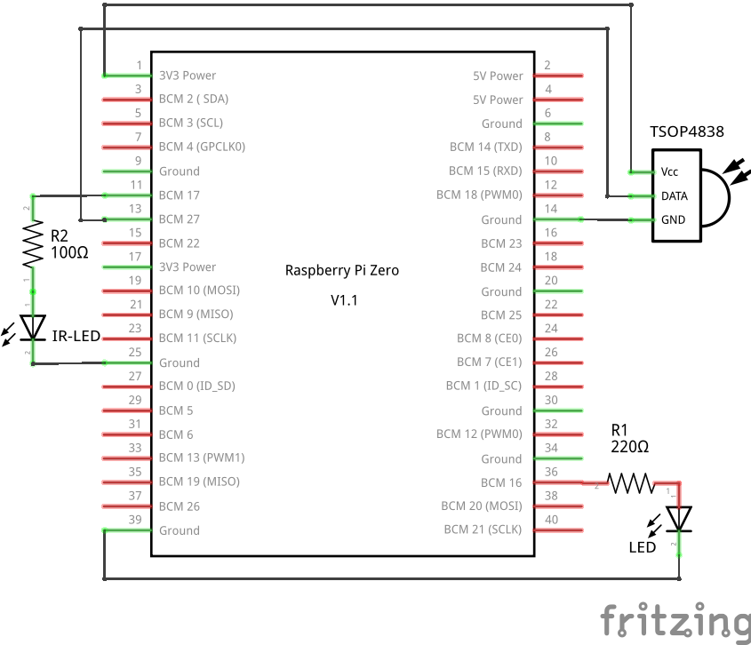
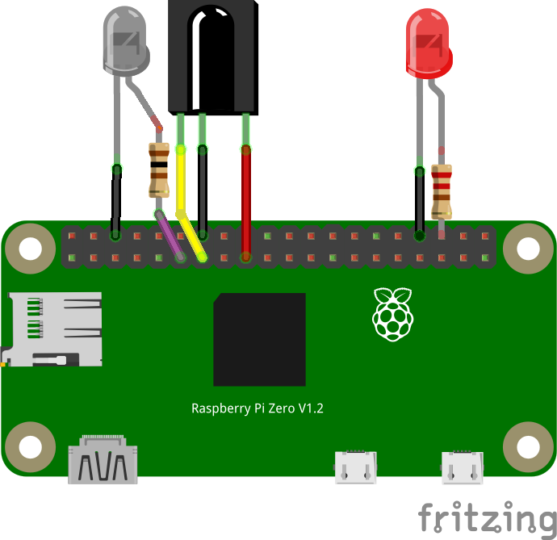

Mit einem günstigen IR-Empfänger lässt sich über einen GPIO-Pin, Kommandos mit einer IR-Fernbedienung am Raspberry Pi auslösen. Nachdem der Kernel in Raspbian aktualisiert wurde, hat sich die Einbindung aber verkompliziert. Wie es richtig geht erfahrt man hier…
Beschreibung
Über einen GPIO Pin lässt sich eine IR-Empfängerbauteil z.B. den Typ TSOP4838 ganz leicht an den Raspberry Pi anschließen. Zusätzliche Bauteile werden nicht benötigt. So lassen sich über eine IR-Fernbedienung Kommandos am System ausführen. Leider hat sich mit dem letzten 4er Kernel bei Raspbian Stretch und Buster einiges geändert, sodass viele Anleitungen im Internet nicht mehr funktionieren. Das neue Kernel-Modul benutzt nun ein anderes Protokoll wodurch der LIRC - Linux Infrared Remote Control Dienst nun nicht mehr korrekt funktioniert. Es bedarf eines Patch (Softwareänderung) des LIRC Programms um den korrekten Betrieb zu gewährleisten.
Anschluss
Der IR-Sensor TSOP4838 funktioniert mit 2,5 bis 5,5 V und kann somit direkt mit 3,3 V versorgt werden. Pin 3 (links) ist dabei die Versorgung VCC. An Pin 2 (mitte) wird GND angeschlossen. Der Signal-Ausgang ist dann auf Pin 1 (rechts), der direkt an einen frei wählbaren GPIO angeschlossen wird (z. B. GPIO18).


Installation
Es muss lediglich ein Devicetree Eintrag in der Konfigurationsdatei “config.txt” eingefügt werden, damit das entsprechende Kernelmodul geladen wird. Als Parameter wird der verwendetet GPIO angegeben.
# TSOP4838 IR-receiver at GPIO27
dtoverlay=gpio-ir,gpio_pin=27
Nach einem Neustart kann LIRC installiert werden.
sudo apt-get install lirc
Der Dienst startet allerdings nicht, da die Parametrierung fehlt.
Parametrierung
Zuerst sollte man überprüfen ob das Kernel Modul korrekt geladen wurde und damit das lirc-Device vorhanden ist.
ls /dev/lirc*
Als Ausgabe sollte man “/dev/lirc0” finden.
Beispielkonfigurationen für LIRC wurden bereits abgelegt, müssen aber noch umbenannt bzw. umkopiert und modifiziert werden.
sudo cp /etc/lirc/lirc_options.conf.dist /etc/lirc/lirc_options.conf
sudo cp /etc/lirc/lircd.conf.dist /etc/lirc/lircd.conf
sudo mv /etc/lirc/lircd.conf.d/devinput.lircd.conf /etc/lirc/lircd.conf.d/devinput.lircd.dist
In der Datei “/etc/lirc/lirc_options.conf” müssen folgenden Zeile angepasst werden (Werte sind anders gesetzt).
driver = default
device = /dev/lirc0
sudo service lircd restart
Nun könnte man den IR-Empfänger bereits mit “mode2” und einer beliebigen Fernbedienung testen.
mode2
Bei einem Tastendruck werden Pulsdauer bzw. Pulspausen ausgegeben.
Allerdings ist eine Programmierung oder Verwendung noch nicht möglich!
LIRC-Dienst anpassen
Leider versteht der LIRC Dienst das Kernel Modul nicht korrekt und muss deshalb modifiziert werden. Wie das Funktioniert wird im Raspberry Pi Forum im Beitrag Using LIRC with kernel 4.19.X and gpio-ir beschrieben.
Folgend ist eine Anleitung für die Erzeugung der aktualisierten Pakete für das aktuelle Debian 10 (Buster) aufgeführt:
sudo su -c "grep '^deb ' /etc/apt/sources.list | sed 's/^deb/deb-src/g' > /etc/apt/sources.list.d/deb-src.list"
sudo apt update
sudo apt install devscripts
sudo apt install dh-exec doxygen expect libasound2-dev libftdi1-dev libsystemd-dev libudev-dev libusb-1.0-0-dev libusb-dev man2html-base portaudio19-dev socat xsltproc python3-yaml dh-python libx11-dev python3-dev python3-setuptools
mkdir build
cd build
apt source lirc
wget https://raw.githubusercontent.com/neuralassembly/raspi/master/lirc-gpio-ir-0.10.patch
patch -p0 -i lirc-gpio-ir-0.10.patch
cd lirc-0.10.1
debuild -uc -us -b
cd ..
Alternativ können sie auch von unserem GitHub Repository heruntergeladen werden.
wget https://github.com/GrazerComputerClub/Raspbian-Image-Generator/raw/master/stageA/02-install-packages/files/liblirc-client0_0.10.1-5.2_armhf.deb
wget https://github.com/GrazerComputerClub/Raspbian-Image-Generator/raw/master/stageA/02-install-packages/files/liblirc0_0.10.1-5.2_armhf.deb
wget https://github.com/GrazerComputerClub/Raspbian-Image-Generator/raw/master/stageA/02-install-packages/files/lirc_0.10.1-5.2_armhf.deb
Nachdem die Pakete bereitgestellt wurden, müssen sie noch installieren werden.
sudo apt remove lirc liblirc0 liblirc-client0
sudo apt install ./liblirc0_0.10.1-5.2_armhf.deb ./liblirc-client0_0.10.1-5.2_armhf.deb ./lirc_0.10.1-5.2_armhf.deb
Wenn nachgefragt wird wie mit den geänderten Konfigurationsdaten umgegangen werden soll, soll wählt man N für “Die momentan installierte Version beibehalten”.
Nun kann man noch zukünftige automatische Updates für die Pakete abschalten.
sudo apt-mark hold liblirc0 liblirc-client0 lirc
Bei unserer Raspjamming Distribution ab Version 10.11.2019 sind die modifizierten LIRC Pakete bereits vorinstalliert!
Fernbedienung anlernen und parametrieren
In diesem Fall wird eine Fernbedienung für einen Holzbahnzug (Brio oder ähnliche Modelle) angelernt. Es gibt bei der Steuerung nur 4 Tasten. Vorwärts, Rückwerts, Licht und Hupe.
sudo service lircd stop
sudo irrecord -H default --disable-namespace
”–disable-namespace” benötigt man, wenn man eigene Namen für Tasten vorgeben möchte.
- Press RETURN to continue. [Enter]
- Nun muss man ein paar Sekunden warten bei denen gemessen wird ob Störungen (z. B. von Leuchtstofflampen) auftreten.
- Enter name of remote (only ascii, no spaces) :ZugB [Enter]
- Press RETURN now to start recording. [Enter]
- Nun muss man einige Tasten abwechselnd für 1 Sekunde drücken, bis eine Zeile mit Punkten voll ist
- Got gap (142596 us)}, Please keep on pressing buttons like described above.
- Nun muss man einige Tasten nochmal abwechselnd für 1 Sekunde drücken bis eine zweite Zeile mit Punkten voll ist
- Please enter the name for the next button (press ENTER to finish recording): UP_B[Enter]
- Taste auf der Fenbedingung drücken
- Please enter the name for the next button (press ENTER to finish recording): DOWN_B[Enter]
- Taste auf der Fenbedingung drücken
- Please enter the name for the next button (press ENTER to finish recording): LIGHT_B[Enter]
- Taste auf der Fenbedingung drücken
- Please enter the name for the next button (press ENTER to finish recording): SOUND_B[Enter]
- Taste auf der Fenbedingung drücken
- [Enter] drücken
- Checking for toggle bit mask. Press RETURN to continue.: [Enter]
- Nun muss eine Taste immer wieder gedrückt werden ohne, dass man auf der Taste bleibt.
Danach wird eine Konfigurationsdatei mit dem Namen “ZugB.lircd.conf ins” aktuelle Verszeichnis geschrieben.
Die Datei sieht ungefähr so aus:
begin remote
name ZugB
bits 16
flags SPACE_ENC|CONST_LENGTH
eps 30
aeps 100
header 3032 954
one 2010 959
zero 1026 959
gap 142587
toggle_bit_mask 0x3030
frequency 38000
begin codes
UP_B 0x916E
DOWN_B 0x8976
SOUND_B 0x837C 0x8683900
LIGHT_B 0x857A 0x8683900
end codes
end remote
Nun muss sie in das LIRC Konfigurationsverzeichnis kopiert werden.
sudo cp ZugB.lircd.conf /etc/lirc/lircd.conf.d/
service lircd restart
Tasten einem Befehl zuordnen
Nach dem Anlernen der Fernbedienung kann die irexec.lircrc Konfigurationsdatei erstellt werden, um Befehle mit dem Programm “irexec” ausführen zu können.
Eine Beispieldatei wurde bei der Installation mit dem Namen “/etc/lirc/irexec.lircrc.dist” angelegt.
Durch das Anlegen folgender Befehle in der “/etc/lirc/irexec.lircrc” Konfigurationsdatei, wird anfänglich aber nur die Taste auf der Konsole ausgegeben.
begin
prog = irexec
button = UP_B
config = echo "UP-B"
end
begin
prog = irexec
button = DOWN_B
config = echo "DOWN-B"
end
begin
prog = irexec
button = SOUND_B
config = echo "SOUND-B"
end
begin
prog = irexec
button = LIGHT_B
config = echo "LIGHT-B"
end
Für einen Testlauf muss das Programm mit der Konfigurationsdatei gestartet werden.
irexec /etc/lirc/irexec.lircrc
Wenn das geht, kann eine Konfiguration als Hintergrunddienst erfolgen. Man könnte z. B. eine LED am GPIO schalten. Hierzu verwenden wir eine Low Power LED, die über den internen Pull-Up Widerstand von ca. 50 KOhm angesteuert wird. Hierzu bleibt der GPIO16 auf Eingang, wir schalten aber bei Eingang einmal den internen Pull Widerstand auf 3,3 V und GND. Die Low Power LEDs können auch bei dem geringen Strom von ca. 25 µA noch merklich leuchten.
begin
prog = irexec
button = UP_B
config = gpio -g mode 16 up
end
begin
prog = irexec
button = DOWN_B
config = gpio -g mode 16 down
end
Wenn man den Dienst aktivieren und starten möchte, so muss man folgende Befehle eingeben (Service Datei: /lib/systemd/system/irexec.service):
sudo systemctl unmask irexec.service
sudo systemctl enable irexec.service
sudo service irexec start
Verlinkungen
Datenblatt TSOP48..
Raspberry Pi Forum Using LIRC with kernel 4.19.X and gpio-ir